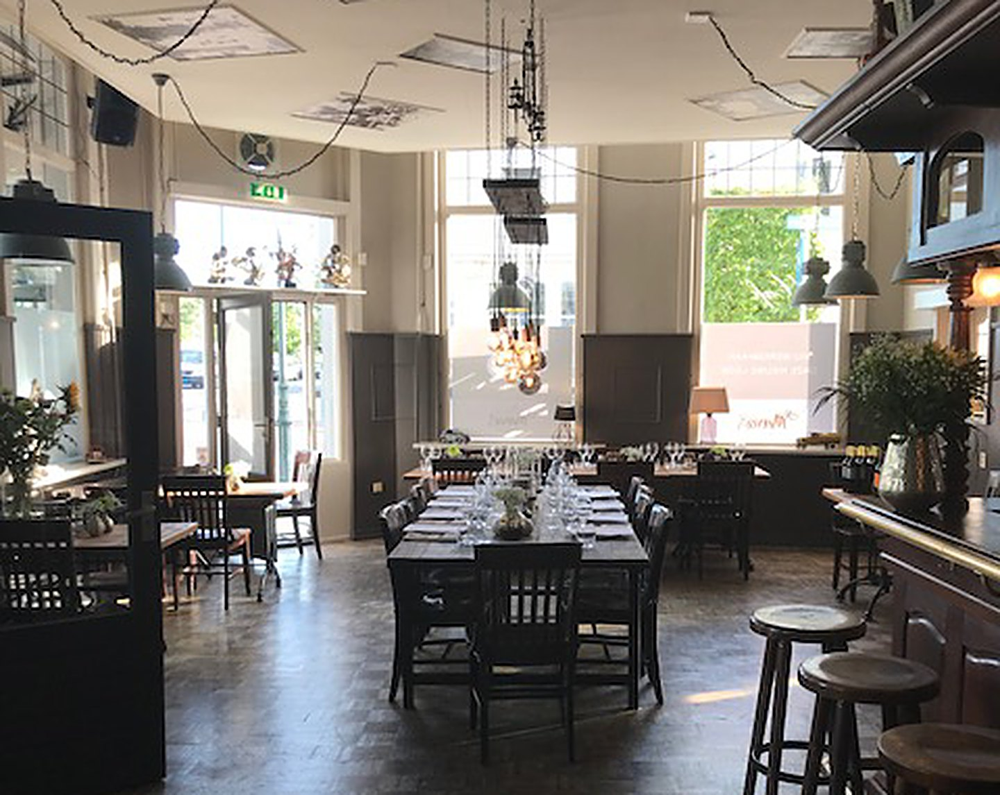
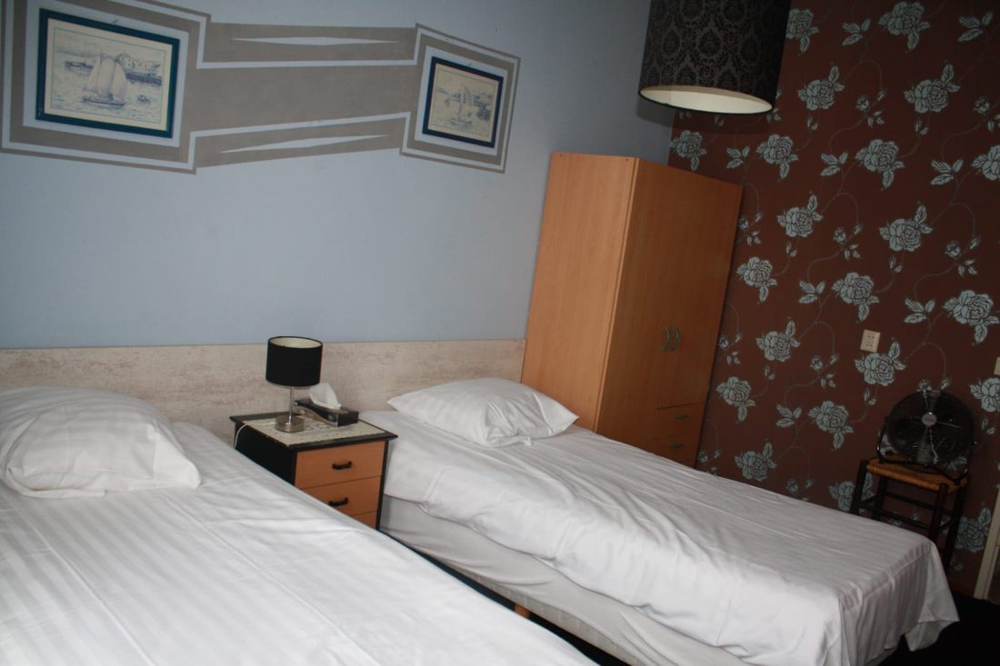
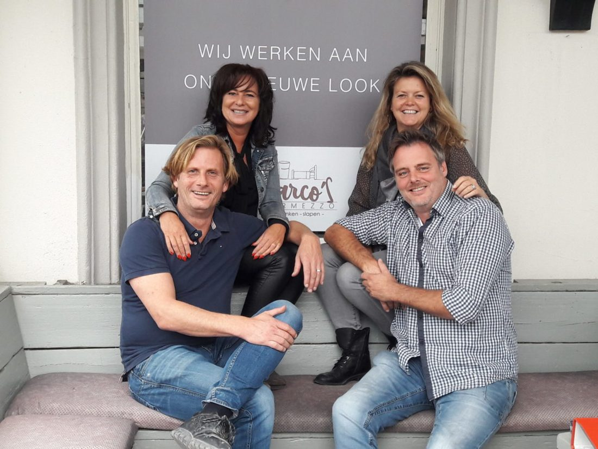

Een gezellige huiskamer tegenover het station
Lunch, diner of gewoon een biertje aan de bar. Dagelijks vers uit eigen keuken, aan de rand van de binnenstad van Bergen op Zoom. En wil je blijven slapen? Dat kan bij ons in Hotel De Blauwe Vogel.
De kaart
Onze chef kookt met dagverse producten, verse kruiden en volle smaken, volgens eigen recept.
V vegetarisch · Allergisch voor iets? Vraag naar onze ingrediënten.
Slapen in Hotel De Blauwe Vogel
Ons hotel met historie heeft negen ruime, rookvrije kamers. Elke kamer heeft een eigen keukentje, dus je bent vrij om te doen wat je wilt. Voor zaken of om Bergen op Zoom te ontdekken.
- Eigen douche en toilet
- Keukentje met koelkast
- Tv en zithoek
- Gratis wifi
Prijzen per kamer per nacht, excl. toeristenbelasting (€ 3,50 p.p.). Inchecken 15.00 – 21.00 uur, uitchecken voor 11.00 uur. Huisdieren zijn niet toegestaan.

Wat gasten zeggen
De gerechten smaken inderdaad dagvers en de borden gaan helemaal leeg; dat zegt genoeg! Gewoon Hollandse Kost, hoe lekker is dat?Rien De Bruijn · gastenboek
Wij zaten met z'n allen in de opkamer, die erg sfeervol is ingericht net als het café. … Vooral het stoofvlees van hert was erg verrassend. … Sfeervol, lekker en beregezellig!M. Luijsterburg · gastenboek
Vanavond heerlijk gegeten bij Marco's, tot onze verrassing stond er tong op het menu ipv zamfilet. … Vlotte bediening, heerlijk eten.A. Heijmans · gastenboek

Over Marco's Intermezzo
Aan de rand van de historische binnenstad, recht tegenover het NS-station, vind je onze huiskamer. Loop binnen voor koffie met vers gebak, een speciaalbiertje aan de bruine bar of een diner met de hele familie. Bij mooi weer op het terras.
We koken elke dag vers, volgens eigen recept en met veel aandacht en liefde. Onze chef laat zich daarbij inspireren door lokale leveranciers.
Reserveren
Zeker van een plekje? Reserveer een tafel of kamer. Liever bellen kan natuurlijk ook.
Bel of kom langs
We zijn 7 dagen per week open.
Openingstijden
Keuken: ma t/m za 11.00 – 21.00, zo 11.00 – 20.00. Parkeren aan de straat (betaald) of gratis op 10 minuten lopen.